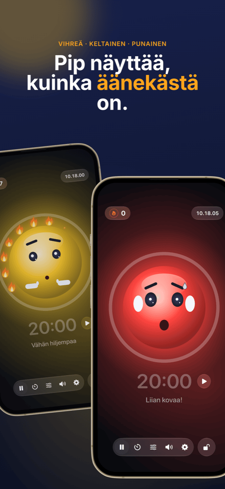

Luokanhallinta: istumajärjestys, ryhmät ja melu hallintaan
Hyvää luokanhallintaa tuskin huomaa, ja juuri se on sen tarkoitus: tunti etenee, siirtymät sujuvat ja aika kuluu oppimiseen eikä huomauttamiseen. Kolme kysymystä toistuu lähes joka tunnilla: Kuka istuu missä? Kuka työskentelee kenen kanssa? Ja kuinka kovaa saa nyt olla? Tämä opas esittelee toimintamallin, joka vastaa kaikkiin kolmeen ennen kuin niistä tulee ongelma.
Mitä luokanhallinta oikeastaan tarkoittaa
Luokanhallinta on muutakin kuin kuria. Jo 1970-luvulla yhdysvaltalainen psykologi Jacob Kounin osoitti, että taitavat opettajat eroavat muista vähemmän siinä, miten he reagoivat häiriöihin, ja enemmän siinä, miten hyvin he ennaltaehkäisevät niitä. Hänen kuvaamiaan piirteitä ovat:
- Kaikkialla läsnä oleminen: luokka tuntee, että näet koko huoneen.
- Sujuvuus ja vauhti: siirtymät vaiheesta toiseen eivät vie minuutteja, eikä tunti menetä rytmiään.
- Ryhmän aktivointi: kaikki pysyvät mukana, eivät vain vuorossa olevat.
Paljon tästä on asennetta ja kokemusta. Osa on kuitenkin pelkkää järjestelyä, ja sen voi valmistella. Siihen seuraava toimintamalli tarttuu.
Vaihe 1 · Kerran etukäteenLuo luokkalista kerran, käytä sitä kaikkialla
Suurin ajansyöjä on tehdä sama työ kahteen kertaan. Vie luokkalista kerran CSV-tiedostoksi Excelistä, Numbersista tai Google Sheetsistä. Sekä Platzwahl että Team Zufall tuovat tiedoston suoraan, ja koko luokka on lisätty sekunneissa. Molemmat sovellukset tallentavat nimet vain laitteelle, ilman tiliä ja ilman pilveä. Oppilastietojen kohdalla se ei ole yksityiskohta vaan edellytys.
Vaihe 2 · PerustaIstumajärjestys: ehkäise häiriöt ennen kuin ne syntyvät
Istumajärjestys on luokanhallinnan tehokkain työkalu, koska se vaikuttaa joka minuutti ilman, että sinun tarvitsee sanoa mitään. Se, kuka istuu kenenkin vieressä, ratkaisee jutustelun, keskittymisen ja häiriintymisen. Hyväksi havaittua:
- Erota levottomat oppilaat toisistaan, ei vain vierekkäin vaan myös peräkkäin.
- Hyödynnä läheisyyttä: tukea tarvitsevat tai helposti harhautuvat istuvat suorassa näkökentässäsi.
- Sijoita rauhallisia ankkureita vilkkaampien oppilaiden väliin.
- Vaihda säännöllisesti, esimerkiksi lomien jälkeen tai kuukausittain, jottei pysyviä levottomia nurkkia synny.
Platzwahl-sovelluksessa määrität nämä säännöt oppilaskohtaisesti (häiriöalttius, paikka edessä, toivotut vierustoverit, erottelut) ja annat istumajärjestyksen laskea automaattisesti. Pisteytys näyttää, kuinka hyvin kaikki säännöt täyttyvät. Valmis järjestys päätyy pöydällesi PDF-tiedostona.
 Vaihe 3 · Yhteistyövaiheet
Vaihe 3 · Yhteistyövaiheet
Reilut ryhmät ilman väittelyä
”Saadaanko itse valita?” on kysymys, johon moni ryhmätyö kaatuu ennen kuin se alkaa. Vapaa valinta vie aikaa, vahvistaa kuppikuntia ja jättää aina samat ulkopuolelle. Harkittu jako on reilu mutta työläs, eikä se juuri kannata kymmenen minuutin paritehtävään.
Monissa lyhyissä vaiheissa sattuma on paras ratkaisu: se on nopea, kukaan ei tunne itseään suosituksi, ja luokka oppii työskentelemään kaikkien kanssa. Tärkeää on, että arvonta on näkyvä. Kun luokka näkee nimien sekoittuvan projektorilla, ei ole mitään kiisteltävää.
Team Zufall-sovelluksessa valitset joukkueiden määrän, poistat poissaolijat yhdellä napautuksella ja arvot. Joukkueet voi näyttää isona seinällä tai viedä PDF-tiedostoksi. Pidemmissä projekteissa, joissa tiettyjä yhdistelmiä on vältettävä, harkittu jako on yhä parempi valinta.
 Vaihe 4 · Työskentelyvaihe
Vaihe 4 · Työskentelyvaihe
Tee melu näkyväksi sen sijaan, että hyssyttelet jatkuvasti
Ryhmätyö on äänekästä, ja se on ihan hyvä. Ongelma syntyy, kun kukaan ei enää tiedä, mikä on liian kovaa, ja vietät tunnin sanomalla ”Shh!”. Huomautukset kuluvat nopeasti ja keskeyttävät juuri ne, jotka työskentelevät keskittyneesti.
Kolme asiaa toimii paremmin:
- Sopikaa äänitasosta: päättäkää yhdessä, mikä pätee missäkin vaiheessa. Kuiskaus itsenäisessä työssä, pariääni ryhmätyössä.
- Näytä äänitaso: projektorilla näkyvä meluvalo antaa luokalle palautteen, joka sinun pitäisi muuten antaa ääneen.
- Palkitse hiljaisuudesta melun rankaisemisen sijaan: jos valo vain muuttuu punaiseksi ja vie jotain pois, siitä tulee nopeasti painostuskeino, ja yksittäisistä äänekkäistä oppilaista tulee luokan syntipukkeja. Yhteinen tavoite, jonka luokka voi saavuttaa, toimii paremmin.
Juuri tähän Ruhe on tehty: maskotti näyttää vihreää, keltaista tai punaista, ja niin kauan kuin on rauhallista, syttyy liekki toisensa perään. Kaksitoista liekkiä muodostaa täyden seppeleen, ja sitä juhlitaan. Keltaisen ja punaisen rajat säädät vaiheen mukaan, tai annat Ruhen kalibroida itsensä. Ajastin näyttää jäljellä olevan ajan, projektorinäkymä tuo kaiken isona seinälle, ja ohjaimet pysyvät iPadillasi. Ruhe mittaa vain äänenvoimakkuutta; mitään ei tallenneta.

Vaihe 5 · LopetusTee onnistumiset näkyviksi
Tunnin lopussa ratkaisee se, mikä onnistui. Täysi liekkiseppele on hyvä syy lyhyeen kehuun koko luokalle. Ja jos tänään ei onnistunut, se on tilaisuus miettiä yhdessä, mistä se johtui, syyllisiä etsimättä. Tiettyjen pöytien toistuvat ongelmat kertovat, että seuraava istumajärjestys on ajankohtainen.
Tältä näyttää oppitunti tällä toimintamallilla
| Vaihe | Mitä tapahtuu | Työkalu |
|---|---|---|
| Ennen tuntia | Istumajärjestys on esillä, kaikki tietävät paikkansa. Ei tungosta paikoista. | Platzwahl |
| Aloitus | Koko luokan vaihe kiinteässä istumajärjestyksessä. | – |
| Siirtymä | Joukkueet arvotaan projektorilla, poissaolijat on poistettu. | Team Zufall |
| Työskentelyvaihe | Meluvalo ja ajastin pyörivät projektorilla, luokka kerää liekkejä. | Ruhe |
| Koonti | Paluu omille paikoille, nopea katse liekkiseppeleeseen. | Ruhe |
Usein kysyttyä
Mitä luokanhallinta tarkoittaa?
Luokanhallinta kattaa kaiken, mitä opettaja tekee, jotta mahdollisimman suuri osa oppitunnista olisi todellista oppimisaikaa: säännöt ja rutiinit, tilan ja istumajärjestyksen suunnittelun, sujuvat siirtymät ja koko luokan huomioimisen. Kyse on vähemmän häiriöihin reagoimisesta ja enemmän niiden syntymisen estämisestä.
Mikä auttaa, kun luokka on jatkuvasti liian äänekäs?
Sopikaa ensin yhdessä, mikä äänitaso on sallittu missäkin vaiheessa. Tee sitten äänitaso näkyväksi sen sijaan, että huomautat jatkuvasti, esimerkiksi projektorilla näkyvällä meluvalolla. Tehokkainta on huomioida rauhalliset vaiheet sen sijaan, että vain rankaisisi melusta.
Onko meluvalo opetuksessa järkevä?
Kyllä, jos sitä käytetään yhteisenä tavoitteena eikä rangaistusvälineenä. Rajojen pitää sopia vaiheeseen: ryhmätyö saa olla äänekkäämpää kuin itsenäinen työ. Meluvalo, joka palkitsee hiljaisuudesta melun rankaisemisen sijaan, estää yksittäisiä äänekkäitä oppilaita joutumasta luokan syntipukeiksi.
Pitäisikö ryhmät jakaa sattumanvaraisesti vai harkiten?
Molemmilla on paikkansa. Lyhyissä ja toistuvissa pari- tai ryhmävaiheissa sattuma on ihanteellinen: nopea, reilu ja ilman väittelyä siitä, kuka on kenenkin kanssa. Pidemmissä projekteissa tai hankalissa asetelmissa harkittu jako kannattaa. Itse istumajärjestys kannattaa sen sijaan aina suunnitella harkiten.